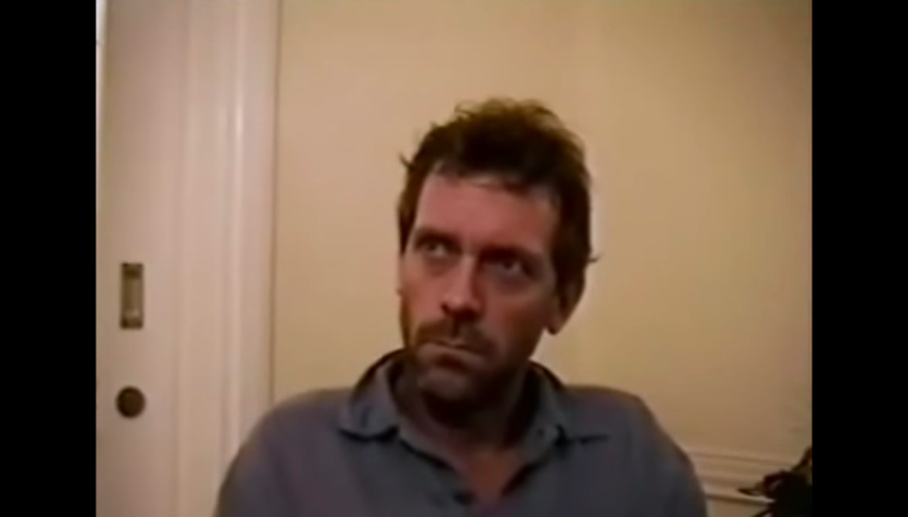

La Audición en el Baño
Cuando Hugh Laurie envió su video de audición para el papel de Gregory House, se encontraba en Namibia filmando la película "El vuelo del Fénix". Grabó la cinta en el baño de su hotel porque era el único lugar con suficiente luz.
El productor ejecutivo, Bryan Singer, buscaba a un actor exclusivamente estadounidense para el papel. Al ver el video de Laurie, Singer comentó: "¿Ven? Esto es lo que quiero, un chico americano normal", sin tener la menor idea de que Laurie era británico y estaba fingiendo el acento a la perfección.